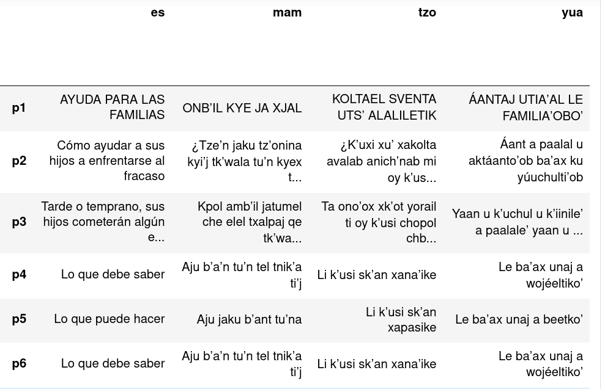
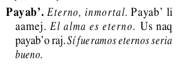

Textos paralelos
Un texto paralelo se refiere al conjunto de dos o más textos multilingües, alineados a nivel de frase, donde cada una de las frases alineadas corresponde a la traducción de las demás, en cada uno de los idiomas involucrados. El siguiente es un ejemplo de un texto paralelo en español, mam, tzotzil, y maya yucateco:

Los textos paralelos son necesarios para los sistemas modernos de TAN porque, para entrenarse, estos necesitan “ver” tanto texto como sea posible en todos los idiomas involucrados para aprender a traducir entre estos.
Los vocabularios
Publicados por la Academia de Lenguas Mayas de Guatemala (ALMG), con la excepción del tzeltal, cada uno de los vocabularios consiste en un listado de voces en una lengua maya, oraciones que ejemplifican sus usos, y sus correspondientes traducciones al español. El siguiente es un ejemplo de una entrada en el vocabulario mam:

Los vocabularios son un recurso invaluable pues, además de tratarse de una colección de varios miles de frases en paralelo en diversas lenguas mayas, el registro lingüístico que utilizan corresponde al del uso más frecuente de los hablantes de cada comunidad lingüística.
La extracción original de los vocabularios mayas, publicados por la ALMG en formato pdf de texto, fue llevada a cabo utilizando pdfplumber.
La ALMG ha publicado muchos más textos mono y bilingües que con los que contamos actualmente. A continuación un listado de los documentos de los que podríamos extraer textos paralelos:
Achi
Akateko
Awakateko
- Vocabulario
- Vocabulario ilustrado.*
- Plantas Medicinales*
- Lectura infantil
- Lectura infantil 2
- Numeración
Ch'orti'
- Vocabulario pedagógico
- Ley de idiomas mayas y su reglamento
- Ley de catastro
- Ley de información pública
- Literatura
Chuj
Itza'
- Vocabulario
- Vocabulario pedagógico
- Neologismos
- Ley de idiomas mayas y su reglamento*
- Ley contra la violencia sexual, explotación y trata de personas*
- Ley contra el femicidio y otras formas de violencia contra la mujer*
- Acuerdo de identidad de los pueblos indígenas*
Ixil
Jakalteco/Popti
- Vocabulario pedagógico
- Ley contra el femicidio y otras formas de la violencia contra la mujer
- Ley de simplificación de requisitos y trámites administrativos
- Diccionario*
- Album infantil*
Kaqchikel
- Ley de idiomas mayas y su reglamento
- Ley de simplificación de requisito y trámites administrativos
- Popol Wuj*(pdf de imágenes)
K'iche'
Mam
- Vocabulario
- Diccionario de sinónimos*
- Ley de simplificación de requisito y trámites administrativos
- Diccionario bilingüe
- Popol U'j*(pdf de imágenes)
- Numeración maya
Mopan
Poqomam
Poqomchi
Q'anjob'al
Q'eqchi'
Sakapulteko
- Vocabulario (pdf de imágenes)
Sipakapense
Tektiteko
Tz'utujil
Uspanteko
*denota texto mayormente monolingüe.